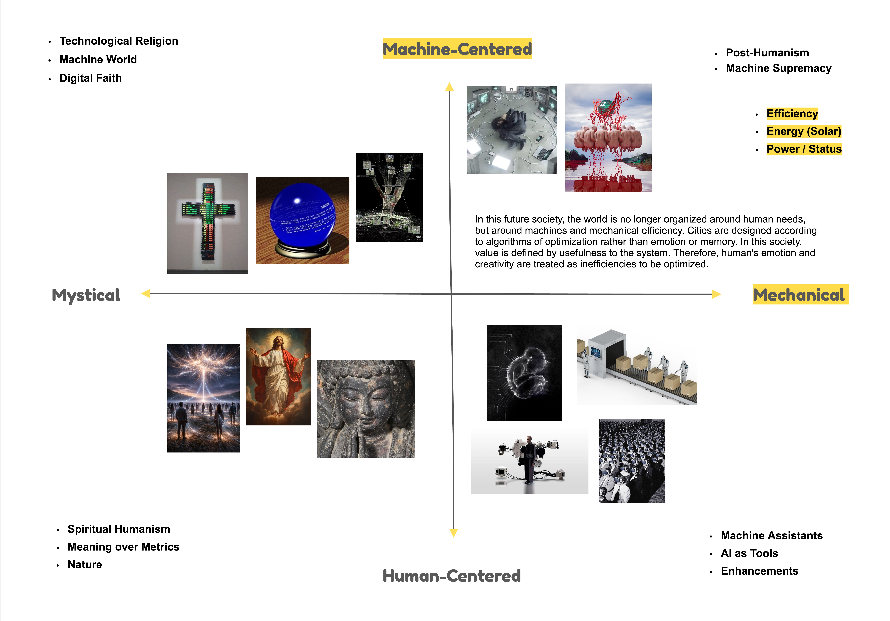
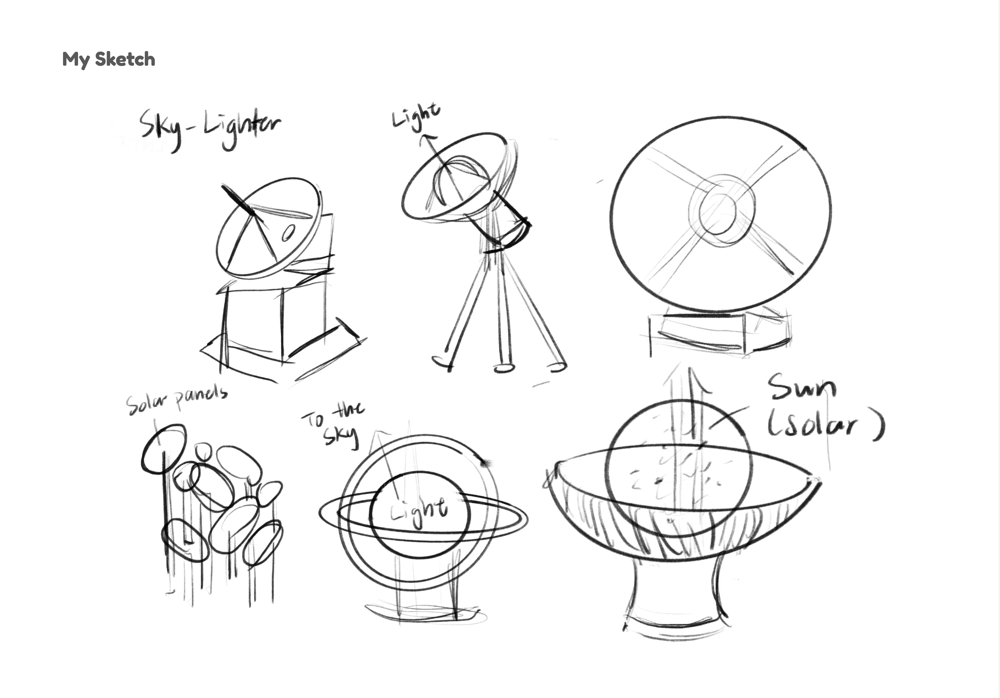
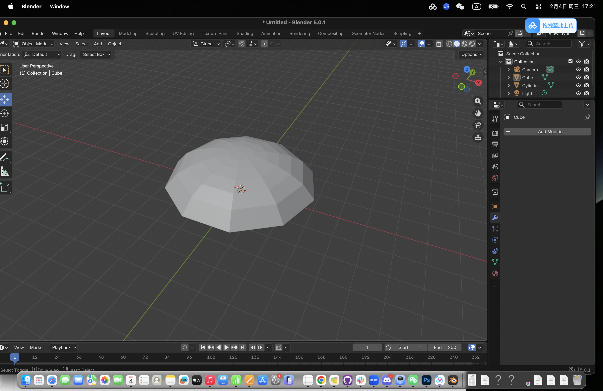
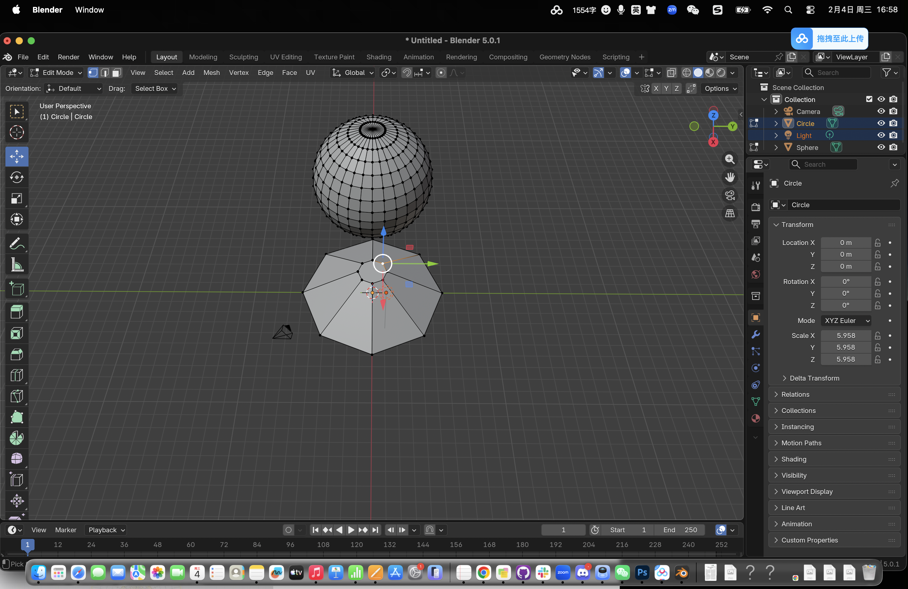
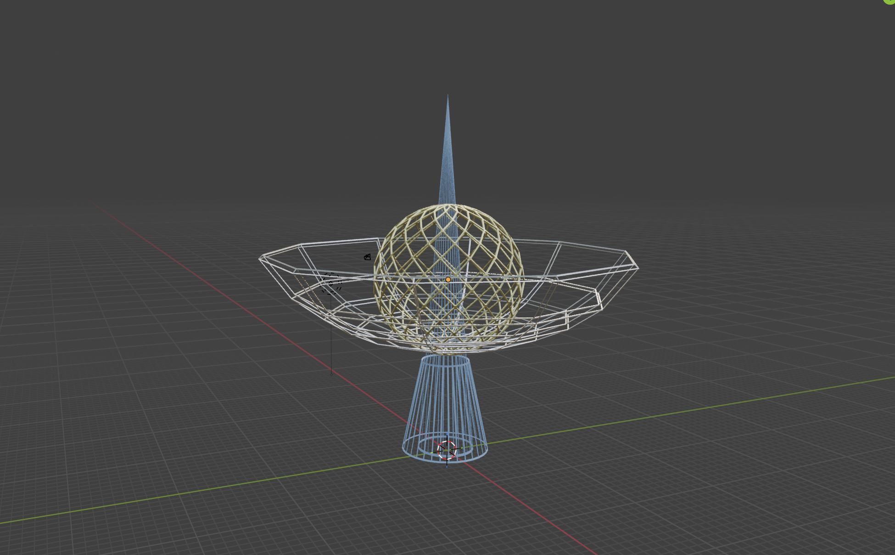
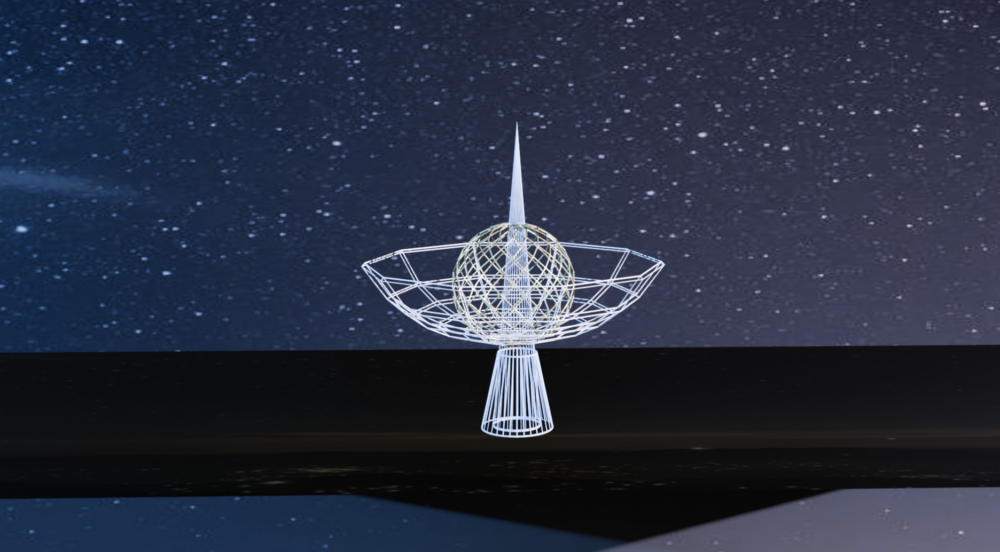
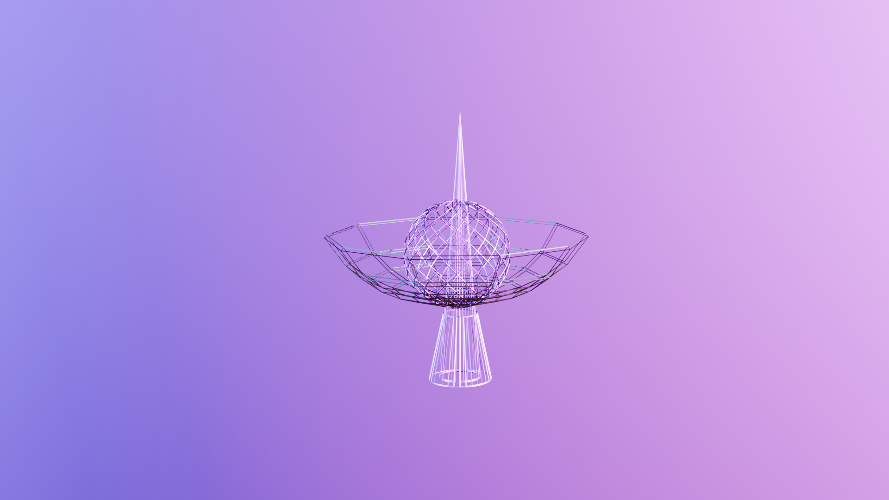

Archeology of the Futures
Concept: The 2D Matrix

Inspiration
My design inspiration comes from the unique "polar night" phenomenon within the Arctic Circle, such as in Tromsø, Norway. Every year, from the end of November to mid-January, the city is surrounded in darkness for a long periods, with residents experiencing only glimpses of weak sunlight even at midday. This lack of sunlight not only impacts the city's operations but also lead to serious problems for people's physical and mental health, such as seasonal affective disorder due to vitamin D deficiency and sleep rhythm disturbances. Current solutions mostly focus on the individual level, such as using "artificial sun lamps," but these solutions are often costly for individuals. Based on this, I proposed Sky Lighter, a public infrastructure solution envisioned for 50 years from now. It is not just a ground-based device, but a light energy recycling system that collects and stores high-energy sunlight during the polar day. When the polar night arrives, it projects simulated full-spectrum natural light into the sky, using atmospheric reflection to "recreate" sunlight for the entire city.
Initial Sketches

The Building Process
STEP 1: I added a sphere - deleted the vertices - "loop selection" - to create the umbrella shape. Tutorial: https://b23.tv/zis3U5w

STEP 2: I added another UV sphere and put it into the middle of the umbrella shape object.

STEP 3: I used wireframe modifier to convert the geometry to a wireframe look.

STEP 4: I added a cone and placed it in the middle of my wireframe object (also added a modifier as well).

STEP 5: I adjusted the thickness, metallic, base color, and the other details to make it the effect I prefer.

STEP 6: In the shader editor, I changed parts of the object into yellow and blue based on my preferences.

STEP 7: I created two planes to use it as the background and ground for photography.

STEP 8: Then, I added an image (starry night) as the background, then I adjusted the camera and light to make it looks clear and realistic, ready to render.

Rendered Image: Sky Lighter

I chose a funnel-and-sphere form to represent the device’s foundation and core. At the center, a crystal sphere sends a warm glow that can light up the entire sky. The upward-facing structure is designed to maximize light capture during the summer months and to concentrate that light during the winter. By reflecting light off an artificial atmospheric layer, the system disperses daylight across the urban landscape, helping restore residents’ life rhythms. In terms of material, I chose to use cold metal and reflective glass as the primary textures. These materials give Sky Lighter a distinctly futuristic presence. Also distinguish its functions so it's not simply as a ground station, but as an infrastructural lens between the city and the sky.
Other Exploration
